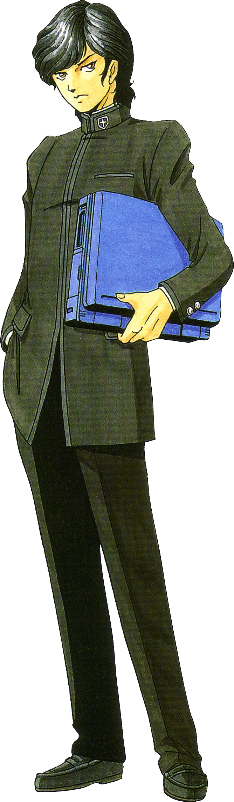
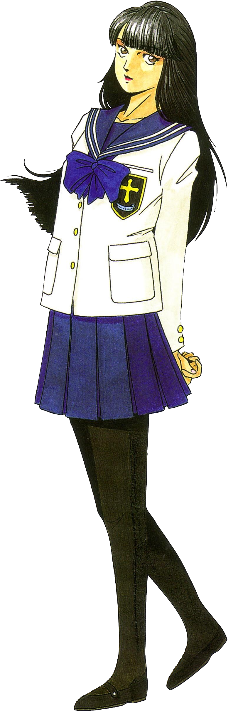

| Digital Devil Story: Megami Tensei | |
|---|---|

|
|
| Nome original: | デジタル・デビル物語 女神転生 |
| Ano de lançamento: | 1987 no Japão |
| Plataforma(s): | Famicom, Super Famicom e Nintendo Switch |
Digital Devil Story: Megami Tensei
Digital Devil Story: Megami Tensei é o primeiro de dois jogos da série Megami Tensei lançado para Famicom. Começou a franquia Megami Tensei como a conhecemos, embora um outro jogo relacionado e com o mesmo nome tenha sido lançado para vários computadores alguns meses antes. O título do jogo se refere à verdadeira identidade de Yumiko Shirasagi, a reencarnação da deusa Izanami.
Um remake aprimorado deste jogo e de Megami Tensei II foi mais tarde lançado para o Super Famicom, intitulado Kyūyaku Megami Tensei.
| Contents |
|---|
1. Plot
Situado após os eventos do livro original e sua sequência, o enredo do jogo começa com o lorde demônio Lúcifer tendo feito Izanami de refém e levantado um enorme labirinto no Monte Shirasagi, bem como revivendo os senhores demônios anteriormente mortos Set e Loki para servir como seus minions. Akemi Nakajima, armado com seu Programa de Invocação de Demônios, e Yumiko Shirasagi entram no labirinto para resgatar Izanami e derrotar Lúcifer.
2. Personagens

